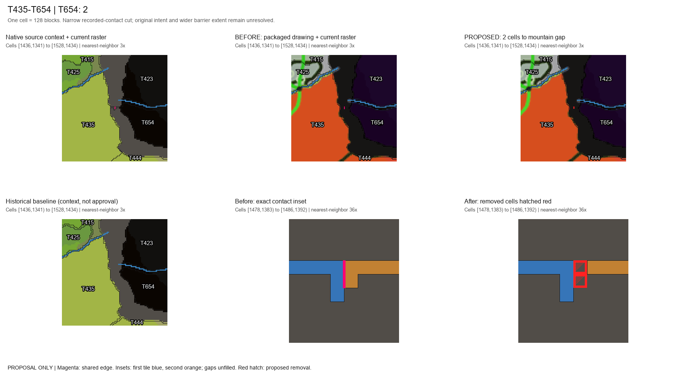
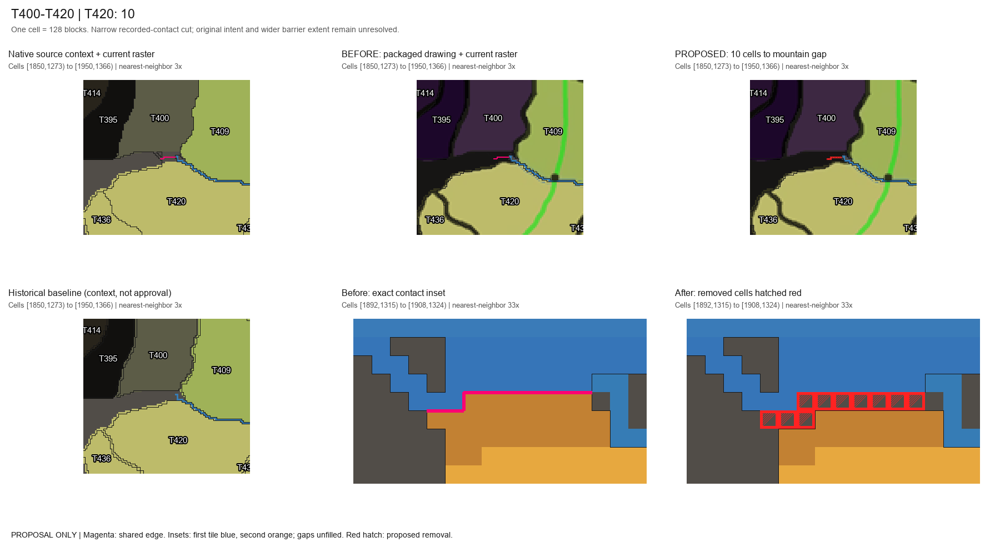
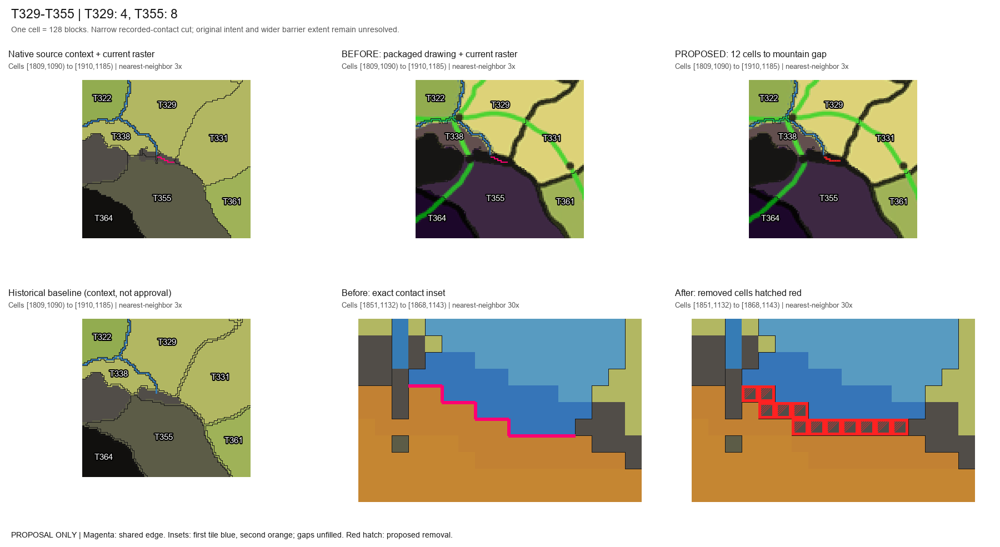
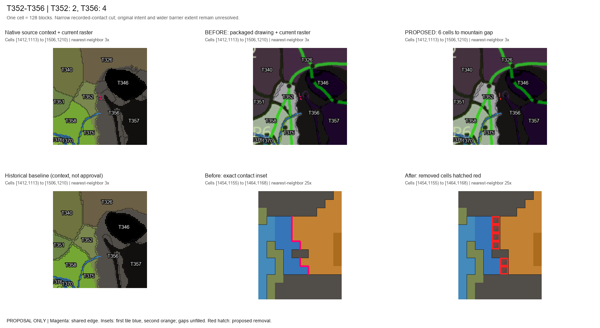
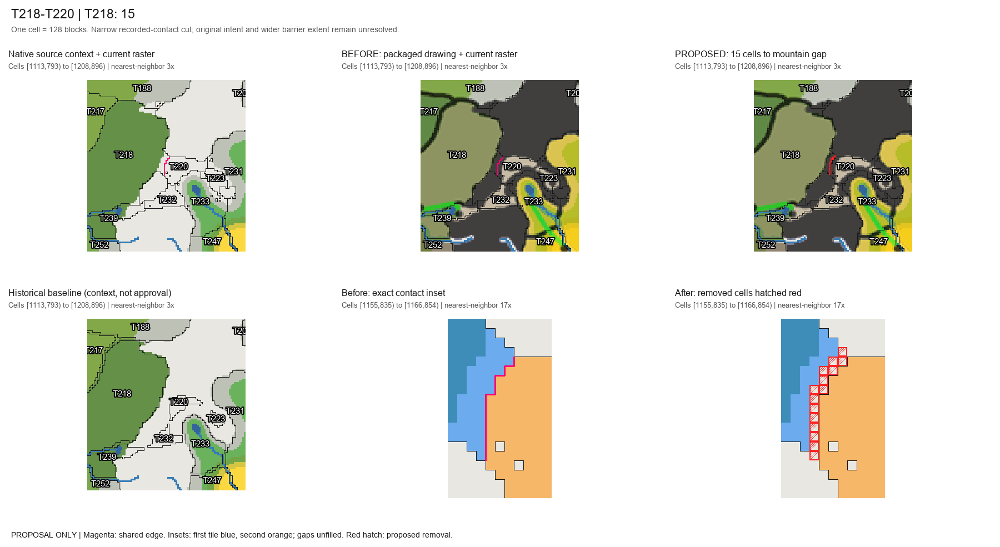
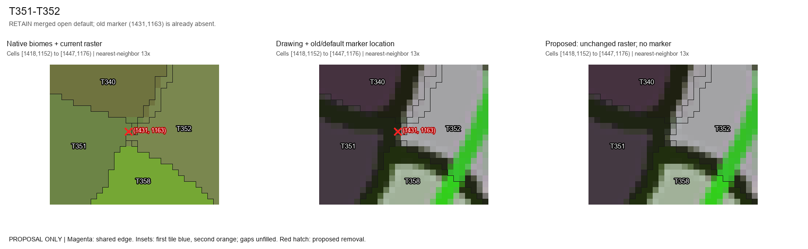
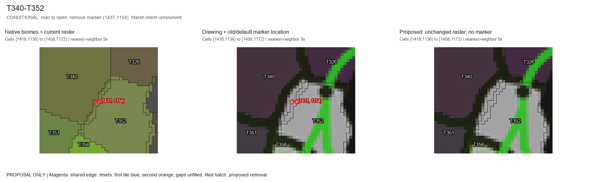
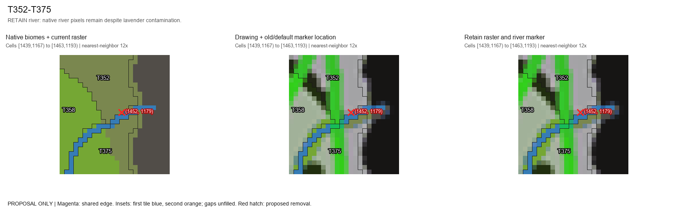
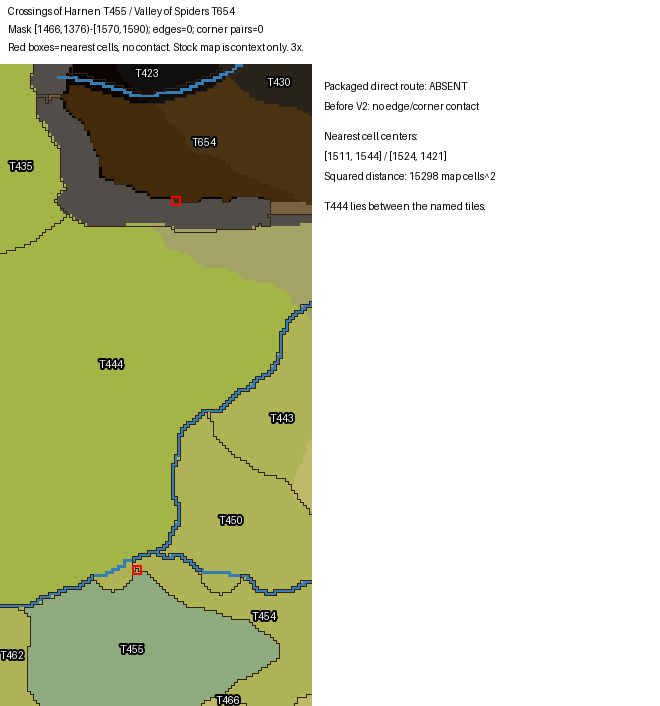

Dev 26ba6cb. Proposals only: 45 exact mountain-contact cells; 621 stable IDs; no production writes. Original hand-drawn intent remains unverified. Full decision package and manifests.
| Contact | Raster / native / source | Recommendation and impact | Remaining decision |
|---|---|---|---|
| T435-T654 | 5 contact cells; (1481,1386)-(1482,1388); all native Mordor Mountains. Historical baseline: all GAP. | 2 cells from T654; retain absent edge. No route either way. | Approve this narrow mountain separation and exact manifest. Packaged drawing supports the range; original hand-drawn intent, width and full extent are not independently verified. |
| T400-T420 | 21 contact cells; (1895,1318)-(1904,1320); all native Mordor Mountains. Historical baseline: all GAP. | 10 cells from T420; retain absent edge. Both ways via T409; its bridge unchanged. | Approve this narrow mountain separation and exact manifest. Packaged drawing supports the range; original hand-drawn intent, width and full extent are not independently verified. |
| T329-T355 | 27 contact cells; (1854,1135)-(1864,1139); all native Mordor Mountains. Historical baseline: all GAP. | 12 cells: 4 T329 + 8 T355; retain absent edge. Forward via T331; reverse via T338. T329/T331 border 86 to 85 segments; open edge unchanged. | Approve this narrow mountain separation and exact manifest. Packaged drawing supports the range; original hand-drawn intent, width and full extent are not independently verified. |
| T352-T356 | 16 contact cells; (1457,1158)-(1460,1164); all native Mordor Mountains. Historical baseline: all GAP. | 6 cells: 2 T352 + 4 T356; retain absent edge. Five-hop paths each way unchanged. Avoid the old 8-cell T352-side cut, which splits off 3 cells. | Approve this narrow mountain separation and exact manifest. Packaged drawing supports the range; original hand-drawn intent, width and full extent are not independently verified. |
| T218-T220 | 30 contact cells; (1158,838)-(1162,850); all native Misty Mountains. Historical baseline: all GAP. | 15 cells from T218; retain absent edge. No route either way. Leave Caradhras and T239-T232-T220-T223-T233 corridor intact. | Approve this narrow mountain separation and exact manifest. Packaged drawing supports the range; original hand-drawn intent, width and full extent are not independently verified. |
| T351-T352 | Completed PR32 control. Native Nindalf / Ithilien Wasteland; lavender falsely counted as water (2/3 historic samples). | Retain current open edge and absent marker (79488,80,55424); no new edit. | Generated terrain and saved effective edge not inspected here. |
| T340-T352 | Concrete false-color candidate: 25/25 historic samples; no native river in 475 sample occurrences (overlaps included). Dead Marshes / Ithilien Wasteland / Nindalf / Dagorlad; lavender (194,185,230) qualifies as water. | Conditional river to open, remove only marker (80256,80,54272), map (1437,1154). Raster unchanged; currently 0 edges and 2 corner contacts. | Approve ordinary passage across this marsh/land interface. Absence of a named river does not prove dry terrain or disprove an intended wetland barrier. |
| T352-T375 and nearby river controls | Decorative contamination also occurs near T352/T375, but its scan contains 67 native river sample hits; T351/T371 166, T351/T353 904, T328/T351 7 (overlaps included). | Retain those river flags and markers. Do not propagate the lavender fix into real river crossings. | Any bridge/pass correction requires its own intended crossing evidence. |
| Harnen T455-T654 | Unverified report: 0 edge/corner contacts. Nearest cells (1511,1544) and (1524,1421); squared center distance 15298 cells. | Retain geometry and absent edge. T444/T654 is a different contact; do not substitute it. | Exact live tile IDs, coordinates, running candidate and screenshot/source needed. |








